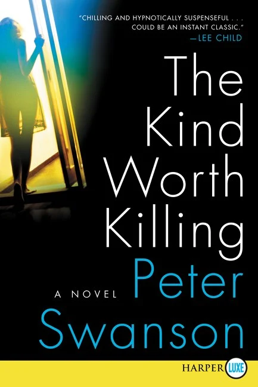

The kind worth killing
Auteur : Peter Swanson
Genre: Thriller psychologique
Année de publication: 2015
Langue: Anglais et Français (titre VF : Ceux qu’on tue )

Sommaire
Ted Severson, un riche homme d’affaire, rencontre Lily Kintner dans un aéroport de Londre. Après quelques verres, il lui confie que sa femme Miranda le trompe avec Brad, l’entrepreneur qui construit leur maison. Il lance une blague et lui dit qu’il aimerait la tuer.
Lily, le plus naturellement du monde, lui propose de l’aider.
Critique
Un excellent thriller popcorn!
pas nécessairement le genre d’histoire qui reste gravée dans la mémoire pendant des années, mais ça n’empêche pas d’apprécier la lecture sur le coup.
Moment favori
Tous les revirements de situations, car il y en a PAS MAL!
Moment moins fort
Ce n’est pas un livre qui m’a marqué particulièrement